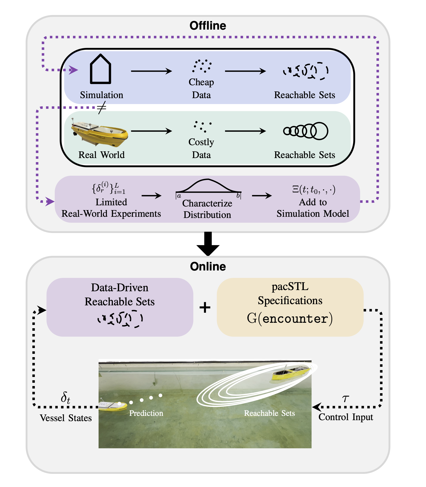

Abstract
Robotic systems must operate under uncertainty while satisfying complex task and safety specifications. Monitoring such specifications under uncertainty remains challenging, as existing formulations typically require extensive data or explicit uncertainty distributions. In this paper, we propose a realtime monitoring framework that reduces data requirements by leveraging data-driven reachable sets for specification evaluation. We instantiate the framework for maritime navigation, where complex specifications arise from traffic rules. We develop a dataefficient pipeline for constructing reachable sets and derive a monitoring formulation suitable for real-time deployment. Simulation and hardware experiments demonstrate robust monitoring under realistic disturbances, achieving improved risk detection compared to state-of-the-art metrics.

Offline: We use experimental data to characterize the disturbance distribution and incorporate it into the simulation model, bridging the sim-to-real gap (purple) and enabling inexpensive generation of real-world representative trajectories for reachability analysis. Online: The resulting reachable sets are combined with pacSTL specifications for real-time monitoring.
Qualitative Comparisons
Comparison across diverse driving scenarios: Baseline (left) vs. Our Method (right) | Playspeed × 2